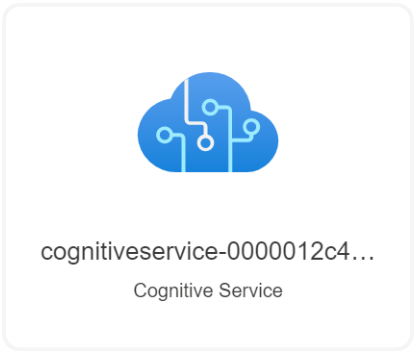

This template deploys a Cognitive Services Universal Key.
If you are new to Azure Cognitive Services, see:
If you are new to template deployment, see:
Tags: Azure4Student, appServices , coginitiveServices, beginner